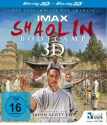

 
 IMDB-Wertung: 0.0 / 10
IMDB-Wertung: 0.0 / 10  Metascore:
Metascore: 
Hollywood-Schauspieler Jason Scott Lee, Darsteller in The Bruce Lee Story und selber ein Experte des von Bruce Lee entwickelten Kampfstil “Jeet Kune Do” rfüllt sich seinen Lebenstraum:
In einem intensiven zweiwöchigen Kung-Fu-Boot-Camp, wird Jason in die Jahrhunderte alten Geheimnisse des Shaolin Kung Fu eingeführt. Bei Shi Yongxin, dem höchsten Mönch des chinesischen Kung Fu Temple, erlernt Jason wie man den menschlichen Körper in die ultimative Kampfkunstwaffe transformiert.
Erleben Sie höchste Kampfkunst, vereint mit geistigen Fähigkeiten, nach der traditionellen Lehre des Zen Buddhismus, durch welche Generationen von Fans weltweit inspiriert wurden.
Durch neuste 3D High-Speed- Technik kombiniert mit mobilen 3D Slow Motion Handkameras war es erstmals möglich Kung Fu in atemberaubenden Bildern und seiner vollen Dynamik festzuhalten.
Jahr:
Dauer: 48 Minuten
FSK:
Land: Studio: Tonspuren: DTS - ,
Untertitel:
Auflösung: 1080p (1920x1080) Größe: 5355 MB
Genre: Dokumentation
Regisseur:
Drehbuch: Doug Atchison
Soundtrack:
Darsteller:
Datei: X:\Dokumentationen\Sport\IMAX Shaolin Bootcamp (, FSK, 1920x1080) 3D.mkv seit 03.03.2015
Festplatte: HD Serien(SU-Z)+Dokus+Musik
 Es gibt insgesamt 34 Filme in der Gruppe 'Dokumentationen\Sport'
Es gibt insgesamt 34 Filme in der Gruppe 'Dokumentationen\Sport'